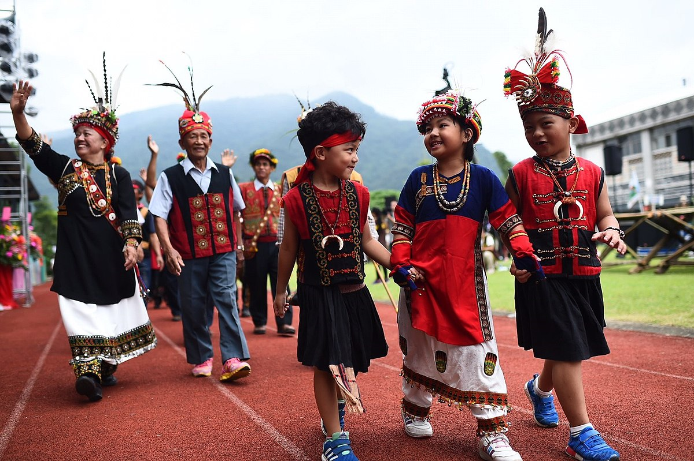

4 / 9 possibilities
Ideginous Taiwanese!
Your definition for Taiwanese is only Taiwanese Aboriginal peoples, who have lived in Taiwan for up to 6000 years. Theindigenous peoples of Taiwan, with the nationally recognized subgroups numbering about 569,000 or 2.38% of the island's population.
Taiwanese indigenous peoples are Austronesians, with linguistic and cultural ties to other Austronesian peoples in the region. Taiwan is also the origin and linguistic homeland of the oceanic Austronesian expansion whose descendant groups today include the majority of the ethnic groups throughout many parts of East and Southeast Asia as well as Oceania such as Brunei, East Timor, Indonesia, Malaysia, Madagascar, Philippines, Micronesia and Polynesia
This definition excludes all people groups who have settled in Taiwan in "recent" history (the past 1000 years), including the Han Chinese, the Manchus, the Japanese, the Dutch and the Spanish. This view is generally held by Chinese Mainlanders and by people living in Taiwan (Republic of China) whose views are aligned with the Pan-Blue Coalition, who do not agree with the view that the "Taiwanese Benshengren" should be allowed to self-identify as Taiwanese, given that they are "invaders" in Taiwan, rather than "natives".